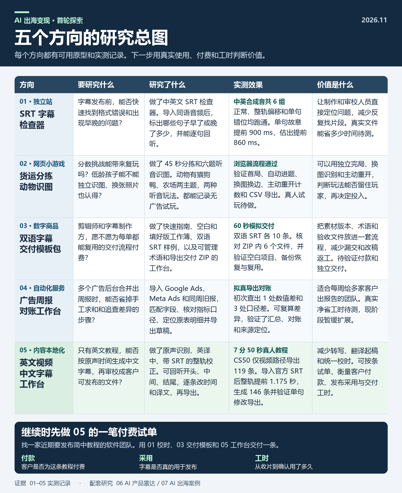

我们用可操作的原型探索了五种 AI 出海变现方向，从独立站、网页小游戏、数字商品，到自动化服务和内容本地化。每项都记录了谁会用、解决哪一步、用什么素材验证，以及哪些价值还要靠真人使用或付费来判断。
对我们来说，这轮研究已经积累了能反复使用的字幕质检、翻译审校和双语交付流程。继续时先用它们做一单内容本地化，记录客户付款、字幕发布采用和实际工时。
点击图片，在新标签页查看高清原图。

五个方向的交付与证据
01 · 独立站
SRT 字幕检查器
给字幕制作者和交付审核人员
- 做出了什么
- 检查中英文 SRT 格式和可读性。导入同语音频后，能标出哪句早了或晚了多少，点击时间戳回听。
- 实际验证
- 中文、英文各用正常、整轨偏移和局部错位样例跑过。中文单句故意提前 900 毫秒，测出提前 860 毫秒。对齐样本为合成语音。
- 继续先做
- 找一位字幕制作者用自己的交付文件，记录定位和复核问题花了多久，对照其原有流程。
对齐标准与独立站判断
- 格式检查支持中英文和混排，可切换可读性规则，结果带行号和时间码。
- 音频与同语字幕须来自同一版成片，共用 00:00，保留片头静音。模型先识别字词的时间，再匹配已有字幕。偏差等于 SRT 时间减估计语音时间，负值是提前，正值是延后。
- 0.350 秒是当前提醒阈值，拿不准的句子列为待复核。独立站最值得测的是审核人员能否借助定位和回听少查一遍，而后观察真实文件和复用情况。
02 · 网页小游戏
货运分拣与动物识图
分数挑战与低龄听音识图
- 做出了什么
- Cargo Switch 是 45 秒分拣挑战。《动物在哪里？》有猫狗鸭、农场两个主题，支持听名字和听叫声，每轮六题，答对自动进题。两款的无广告版本均可记录试玩。
- 实际验证
- 浏览器内跑完首局、重开、留存记录和 CSV 导出。动物游戏另验证了换图、换位置，且主动重开才计入。真人试玩数据待收集。
- 继续先做
- 优先把现有动物游戏交给几位目标年龄的孩子试玩。记录首次选对用时、独立完成六题、换图后是否认出和是否主动重开。
复玩依据、记录口径与扩展条件
- 分拣的复玩假设是少犯错、保住连击、刷新分数。记录首件分对用时、首局完成、主动重开和累计活跃满 60 秒。
- 动物游戏让孩子听音、看图、自己选。当前换图题衡量当轮能否认出另一张照片，隔天再用新照片才适合观察是否记住。大人可在游戏内标注孩子是否独立操作。
- 先用无广告版观察真人。加急件留作备选，在玩家已经主动重开且觉得局内太像时，再考虑让加急件改变处理顺序。动物主题和玩法按试玩发现扩展。
试玩记录按浏览器和站点保存。此前在 43724 录入的数据，可用同一浏览器打开动物游戏原试玩地址查看。
03 · 数字商品
双语字幕交付包
给接剪辑或字幕交付单的制作方
- 做出了什么
- 可下载的快速指南、空白和填好版工作簿、双语 SRT 样例，以及能按项目复用、管理术语和导出交付 ZIP 的网页工作台。
- 实际验证
- 用自制 60 秒演示跑完模拟交付，核对两种字幕轨和六个打包文件。另跑了一单空白项目，验证逐条审校、项目恢复和交付导出。
- 继续先做
- 找一位手上有双语交付单的剪辑师，确认对方是否愿意付费，以及能否用空白模板独立完成自己的交付。
交付包里有什么，能省哪一轮返工
- 导入素材和字幕后按单管理版本、术语和验收项。译文可导入或填写，交付 ZIP 包含两条独立 SRT 和交付说明，项目数据可单独备份。
- 模拟单提前发现一句字幕比操作早了 800 毫秒，以及邀请按钮的译法不一致，把两项留在交付前的一轮审校里。当前为本地预览阶段，买家付款和独立完成交付待验证。
此前在 43726 保存的项目，可用同一浏览器打开原工作台地址继续编辑。
04 · 自动化服务
广告周报对账工作台
给每周合并多个广告后台的代运营团队
- 做出了什么
- 导入 Google Ads、Meta Ads 和同周旧周报，匹配列、比较指标口径，追到可复算的来源并导出周报草稿。
- 实际验证
- 拟真文件初次跑出 1 处数值差异、3 处口径差异。验证了汇总、逐项对账和来源定位可以由工作台完成。客户净省工时待测。
- 继续先做
- 维持暂缓扩展。若有一家每周对账的团队愿意参与，用它的一周历史报表复跑，计入补证和人工复核时间。
差异能查到哪一步，省了哪些操作
- 先分清点击、转化和归因窗口的定义，再对可比指标查数值差。样例切到同口径后，Google 转化对回 28.30，Meta 点击对回 305。
- 同口径的 Meta 花费差 2 美元，可以找到新导出中的三条贡献。只有旧报汇总时，历史原因还要回旧明细核实。
- 省掉的是复制、合并、逐格找差和写复核清单。每周给多家客户重复出报表时更有机会省时，真实净工时仍待计量。
05 · 内容本地化
英文视频中文字幕工作台
给有英文教程、计划发布中文版的软件团队
- 做出了什么
- 只有英文视频也能从原声生成英文时间轴，再翻译成中文。已有英文 SRT 时可估算整轨偏差，回听三处并确认应用。两条路径均可逐条改字、改时间并导出中文 SRT。
- 实际验证
- 7 分 50 秒 CS50 教程，仅视频路径导出 119 条。导入官方 SRT 时，建议提前 1.175 秒，回听与应用后生成 146 条，验证单条修改写入了导出文件。已完成本机流程验证，云端速度与成本目前为估算。
- 继续先做
- 找一个近期要发布简中教程的团队，用现有工作台做一条有偿试单，记录付款、采用和交付总工时。
识别原理、CS50 偏差结论与独立站估算
- 仅视频时，Faster Whisper Base 从原声生成词级时间。以 75 秒为一段，切点前后各留最多 3 秒，合并时去掉重叠内容并换回原视频时间。翻译沿用英文口播的时间轴。当前识别和估算支持 10 分钟、512 MiB 以内的视频。
- CS50 前、中、后三处复核显示，这份官方下载版配套的英文 SRT 比原声晚约 1.1 秒。工作台原始识别时间与三处原声的差距在 0.12 秒以内。整轨建议提前 1.175 秒是根据 120 条匹配口播得出的单一校正量。
- 若做公网独立站，可用后端 CPU 工作进程排队识别，也可用能返回词级时间的托管服务。前次预算以 4 vCPU、4 GiB 和每分钟音频用 30 秒识别为假设，5–10 分钟素材约需 2.5–5 分钟，纯识别约 0.012–0.024 美元。CS50 未单独计纯识别耗时，预算还需另算上传、启动与翻译。
三个字幕项目怎么配合
01 检查已有字幕并定位与原声的时间偏差。05 从英文视频或英文字幕做出可审校的中文初稿。03 用版本、术语和验收清单把双语文件交齐。
继续时先跑 05 的一笔付费试单
优先找近期要发布中文版教程的软件团队，选一条已定稿的短教程，约定交付简中 SRT 和界面术语。05 可以用现有工具接单，而且一次交付就能同时拿到三项证据。
试单过程也能用 01 的校时、03 的交付模板，顺带记录哪一步真的减少了返工。
- 付款
- 客户是否为这条教程付款。
- 采用
- 客户是否把字幕用于发布。
- 工时
- 从接收素材到审校、改稿和确认交付，总共花多久。